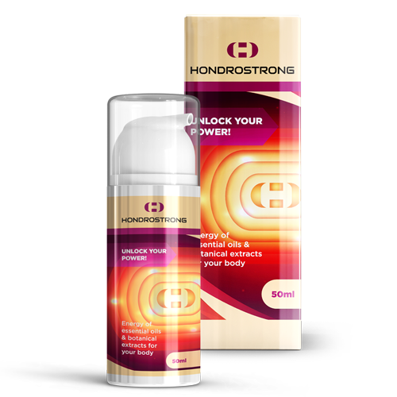

"Българските методи за лечение на ставите предизвикват само недоумение" Известен немски ревматолог даде открито интервю за едно българско издание
Доктор Карл Киршмайер- ръководител на Центъра по ревматология в Берлин Tumorzentrum Eva Mayr-Stihl към световноизвестната клиника Шарите:
Има само една причина за появата на ставни заболявания, но българските лекари напълно я игнорират.
Миналата година д-р Карл Киршмайер дойде в България, за да изучи опита на своите български колеги. Това, което той е видял в България, просто не може да се обясни. В нашата страна, по думите на г-н Киршмайер, ревматологията е останала в средата на миналия век.
След скандалните изказвания в Германия, д-р Карл Киршмайер се съгласи да даде интервю за едно българско издание. Какво не му хареса на известния лекар в българската медицина? И защо той твърди, че БЪЛГАРИТЕ с болни стави никога няма да оздравеят?
- Говорейки пред немските журналисти, Вие казахте, че това, което сте видели в България, Ви е шокирало. Можете ли да коментирате това?
- Искам веднага да отбележа, че имам добро отношение към България, към българската култура и към българските граждани. Но състоянието, в което се намира вашата медицина, наистина шокира европейските лекари. Вашата медицина изостава минимум с 20, а може би, и с 30 години. Поне по отношение на лечението на ставните заболявания и опорно-двигателния апарат. Може да се каже, че в България няма такава наука като ревматологията.
Вижте с какво предлагат да се лекуват ставите българските лекари: Випросал, Долгит, Волтарен\Фастум гел, Диклофенак, Терафлекс, Нурофен и други подобни препарати.
Но тези лекарства не лекуват ставите и хрущялите, а само премахват симптомите на заболяването: болка, възпаление, отичане. Сега си представете, какво става на ниво - вашето тяло. Когато човек си взима хапче, маже се с обезболяващ мехлем или си прави инжекция, болката изчезва. Но веднага щом лекарството спре да действа, болката веднага се връща.
В края на краищата болката е важен сигнал, това показва, че в ставата има патологичен процес. Просто потискайки болката, засегнатите стави се разрушават още повече. Процесът на разрушаване се ускорява 3-5 пъти и в крайна сметка води до необратими промени, до пълното обездвижване и инвалидност.
Такъв начин за борба с болките в ставите в Европа не се използва повече от 20 години. Болкоуспокояващите средства се използват само в крайни случаи, много точно и внимателно. В Германия те се продават само с рецепта и под строг контрол.
Така наречените "хондропротектори" са напълно забранени, смятат се за абсолютно лъжливи и ненужни лекарства.
Вашите лекари и фармацевти просто осакатяват здравето на хората! Ясно е, че постоянното продаване на скъпи средства за премахване на симптомите е много по-изгодно, отколкото излекуването на болестта веднъж и завинаги, а не регенерирането на разрушената става, което е неприемливо!
- Какво ще кажете за лечението на ставите в Германия?
- Всички немски лекари, от ревматолозите до обикновените терапевти и фелдшерите, отдавна са разбрали, че трябва да се отстранят не последиците на заболяването, а неговите причини. Това е ключът към пълното, бързо и безопасно оздравяване. Каква е основната причина за увреждането на ставата? Това е отлагане на ортосолите поради нарушеното кръвообращение и нарушена циркулация на синовиалната течност.
Уратите са соли на пикочната киселина, които са причина за появата на подаграта.
Остеофитите представляват калцинирани соли, които са причина за останалите 97 процента от заболяванията на ставите и гръбначния стълб. Всички видове артрити и артроза, остеохондроза, остеопороза, ревматизъм, бурсит и дори хигрома. Всички тези болести имат една и съща причина – остеофитните натрупвания.
Солта, която се отлага върху повърхността на ставите, разяжда, като шкурка, околните тъкани - костите и хрущялите. При нарастването си, кристалите на ортосолите започват да нараняват мускулната тъкан, сухожилията, кръвоносни съдове и капилярите. Причинявайки, по този начин, възпаление, инфекция, отичане и силна болка.
В напредналите случаи, големите натрупвания на ортосолите могат лесно да отчупят част от костта, при рязко движение, като по този начин причиняват пълно отслабване и трайно обездвижване на ставата.
Съществува много опасно схващане, че калцият е много полезен за ставите. Да, калцият е полезен, но той е полезен само за ЗДРАВИТЕстави. Когато вече имате болки в ставите или хрускане, това значава, че в тях вече се е образувал слой остеофити, а калцият, освен че укрепва костната тъкан, също така укрепва и солите остеофити, увеличавайки и ускорявайки тяхния растеж.
Поради тези причини, германските ревматолози възстановяват преди всичко кръвообращението в болната става, което води до отстраняването на ортосолите, натрупани през годините, от нея. Това от своя страна възстановява нормалното кръвообращение на синовиалната течност и стартира процеса на регенерация на ставните тъкани.
Всъщност човешките стави са много регенеративни, те могат да се регенерират сами, подобно на опашката на гущер. Просто трябва да им се помогне малко, да ги освободим от ортосолите, които са се натрупали върху тях, и процесът ще продължи сам.
Още през 90-те години на миналия век швейцарските учени успяха да получат специална форма на квази-витамин В, така наречения алфа-артроферол. Той се получава чрез синтез на естествени съставки: масло от ела, рога, червен корен, както и набор от повече от 50 различни екстракта.
Това вещество може да проникне в молекулите на ортосолите и да ги разкъса отвътре, в резултат на това повърхностите на ставите се почистват, кръвният поток и циркулацията на синовиалната течност се възстановяват. ЗАВИНАГИ! И по-точно, докато солите отново не се натрупат (но за това ще отнеме няколко десетилетия). Вече няма да се налага ПОСТОЯННО ДА ВЗИМАТЕ лекарства, за да се отървете от болката и възпалението. Вече няма да се страхувате, че един ден ставата ще се "блокира" завинаги, като напълно загуби подвижността си и ще Ви потрябва протеза. Хората стават абсолютно здрави за десетки години напред.
Когато видях българската медицинска статистика, косата ми настръхна. Знаете ли каква е най-честата причина за получаване на инвалидност в Румъния? Не е нито рак, нито СПИН, нито диабет, а остеоартрит! Най-обикновен остеоартрит, който в Германия се лекува за 2-3 седмици с едно евтино лекарство, в България води до инвалидност!
Днес в Германия ставните заболявания не се считат за опасни заболявания, разбира се, с изключение на случаите при тежки наранявания: фрактури, навяхвания, разкъсвания и др. Болката и възпалението в ставите показват само, че те са "натоварени" със соли и те трябва да бъдат почистени. След 2-3-седмично "почистващо" лечение, ставите се връщат към нормата си и за проблемите с тях можете да забравите през следващите десет години.
Заболяванията на ставите, които в България се опитват да "лекуват" поотделно, в Европа отдавна са обединени в едно заболяване "Articulatio de sales" (натрупвания на соли върху ставите). Това заболяване включва:
- Подагра
- Артрит
- Артроза
- Остеохондроза
- Ревматизъм
- Остеопороза
- Бурсит
- Синовит
- Хигрома
Това е много кратък списък, но останалите заболявания са само подтипове на тези девет основни патологии. Например, коксартрозата е подтип на артрита и т.н.
И този дълъг списък от заболявания може много лесно да се излекува с просто почистване на ставите. Това е абсолютно безопасно, дори не изисква медицинска помощ и се извършва в домашни условия.
- Как "се чистят" ставите в Германия?
- Днес има специални препарати, които са предназначени за чистене на ставите от натрупаните соли. Те съдържат алфа-артроферол. Например, много добро средство е балсамът . Той съдържа алфа-артроферол в специална форма, която лесно се усвоява, поради което има голяма ефективност.
Също важно предимство именно на е, че той съдържа комплекс артро-системни витамини, макро-и микроелементи, предназначени да подобрят функционирането на ставните тъкани. За това балсамът има цялостен лечебен ефект върху костната и хрущялната тъкани, синовиалната течност, мускулните влакна, тъканите на ставните връзки и сухожилията. Пълен спектър на възможното комплексно действие.
В състава на влизат повече от 50 компонента. Няма да ги изброявам всичките, ще изброя само основните:
|
Биогенен прополис |
Укрепва и тонизира хрущялната тъкан, повишава нейната еластичност, увеличава устойчивостта на износване. |
|
Блатна тинтява |
Нормализира пропускливостта на малките капиляри |
|
Масло от елха (микро-молекули) |
Облекчава възпалението и инфекцията на тъканите на ставата, спира процесите на гниене |
|
Алфа-артроферол |
Разрушава натрупванията от орто-соли, омекотява ги и ги разгражда на отделни елементи |
|
Червен корен |
Разширява кръвоносните съдове, подобрява притока на кръв към областта на ставата |
|
Клетки от рогата на алтайски марал |
Ускоряват регенеративните процеси в тъканите на ставата |
|
Кора от бреза (алфа елементи) |
Нормализира циркулацията на синовиалната течност |
- За съжаление, не. Българските лекари предпочитат да "хранят" хората с тонове обезболяващи и хондропротектори, а не да се занимават с истинско лекуване.
И уверявам Ви, че българските ревматолози, или поне тези, които се интересуват от прогресивни лечения, знаят за и неговите регенеративни свойства. Но не рискуват да изписват лекарство, което не е в списъка на Министерството на здравеопазването.
Доколкото знам, производителят на е искал да влезе на българския пазар. Но не му разрешиха, като измислиха стотици пречки (бюрокрацията в България не може да бъде изкоренена). Ясно е, че ако това лекарство се появи в аптеките, то аптечната мафия в България ще понесе огромни загуби. Само че фармакологията днес това си е бизнес! Дори и в Европа. Но в развитата Европа, бизнесът се контролира от държавата.
- Какво бихте препоръчали на хората със ставни заболявания, живеещи в България?
- Обикновените хора, особено тези над 50-годишна възраст, страдат най-много от изостаналата българска медицина. Това не е тяхна вина, така е организирана системата ни на здравеопазването.

Но за щастие, има решение. Нашето издание се договори с Университета по медицина и фармация в София и българската поща за възможността лекарството да се разпространява на преференциална цена до всички български граждани, които имат проблеми със ставите. Персоналът на университета създаде специален разпределителен център и ние осигурихме необходимата партида от лекарството. Така че сега всеки българин може да си поръча на символична цена от с безплатна доставка в цялата страна.
Вие трябва да:
- Попълните официалния формуляр за поръчка, за да получите , в края на статията;
- изчакайте обаждането на консултанта, той ще отговори на всички въпроси, които Ви интересуват. В същото време, Вие трябва да му кажете адреса за доставка;
- Поръчката ще бъде доставена в рамките на 3-5 дни.
Продаваме от 2 месеца. Тази възможност вече са използвали няколко хиляди български граждани. Молим, всеки, който е получил , да оцени колко добре му е помогнало лекарството по скалата от 1 до 10. До сега в проучването са взели участие повече от 3000 души, а средната оценка е 9,97 от 10.
Както виждате, помогна на хиляди българи да си върнат подвижността и да се отърват от болката, и Вие все още можете да бъдете сред тях.
- Колко време ще продължи преференциалното разпространение на лекарството?
- Промоцията ще бъде валидна до края на преференциалната партида. Но искам да Ви предупредя, че са останали малко опаковки на цена от . Поръчките се увеличават като лавина. Работи метода "от уста на уста", хората предават информация един на друг, препоръчват на приятели и поръчват за роднини. Дори не очаквахме, че информацията за ще се разпространява толкова бързо.
Докато лекарството не свърши, препоръчвам на всички лица на възраст над 45 години да подадат заявка за получаването му в рамките на преференциалната програма за .
На балансът на партидата с намаление е:
21бр.
 Ивелина Йорданова /София
Ивелина Йорданова /София
Благодаря. Много полезно! За пълно лечение с инжекции в частна клиника ми поискаха 1200 ! Поръчах , докато има такава цена! Първоначално аз не повярвах! Консултантът каза, че все още има, но бързо свършва. За щастие прочетох тази статия.
 Веселин Петров / Пловдив
Веселин Петров / Пловдив
Аз съм един от тези, които са опитали това лекарство върху собствената си кожа. Това наистина е едно от най-добрите, което съм виждал. Имам артроза от много години, вече 7 години страдам от това заболяване. Вече бях готов да вземам хапчета и да правя инжекции до края на живота си, но в крайна сметка след лечението с болката изчезна. Напълно изчезна. Препоръчвам го на всички – той ще Ви помогне!
 Мирослав Иванов / София
Мирослав Иванов / София
На 63 години съм. Коленете ме болят от 53 годишна възраст. Напоследък болката стана абсолютно непоносима. Един познат лекар (приятел от детството) ми разказа за тази програма и ми препоръча да си взема това лекарството преди 3 месеца. Сега, буквално, скачам от радост, че се отървах от болестта... И наистина се радвам, че мога да скачам! Мехлемът е страхотен!
 Емилия Тодорова / не е посочено
Емилия Тодорова / не е посочено
Подадох заявка за промоцията. Обещаха ми, че ще го получа по пощата след пет дни. Наистина се надявам.
 Даниела Нейчева
Даниела Нейчева
Според мен, основната цел на лекарите е да ни одерат колкото се може повече, тях нищо повече няма да ги интересува. На всеки шест месеца си правих инжекции. Тази есен толкова много ми изписаха, че се страхувах да си ги направя. Лекарят дори не погледна какви други заболявания имам, и как това лечение ще ми се отрази на организма. Пълно безразличие, плюс изписване на тези лекарства, за които получава проценти от фирмите. Може в други места да не е съвсем така, но не съм сигурна. Това е нашата медицина. А новината за наличието на това европейско лекарство е добра новина!
 Андрей Константинов / Троян
Андрей Константинов / Троян
Да, в нашата страна, можеш само да умреш. Аз съм на 59. Вече две трети от колегите ми са починали, а останалите едва се движат заради постоянната болка в краката-ръцете-гърба... Струва си да се замислиш
 Константин Дочев / В. Търново
Константин Дочев / В. Търново
Балсамът наистина има невероятен ефект. Мазах се с него още миналата година през лятото (синът ми го донесен от Европа). Подаграта ми мина! Досега нямам никакви симптоми. Изненадан съм. Чувствам се на десет. Препоръчвам на всички да опитат. Още повече, че сега струва само не пропускайте!
 Анета / София
Анета / София
Ние също знаем за балсама от първа ръка, много ни помогна. Постоянно получавах инжекции, а след Хондростронг вече втори месец летя!

 Мая Христова / Банско
Мая Христова / Банско
на мен също балсама ми хареса. Първо бях на Етодолак, после на Мелоксикам и Кеторол. Но след това изведнъж спряха да действат. Отидох на лекар и той ми препоръча да опитам балсама (лекарят беше млад, вероятно все още си мисли, че медицината трябва да помага на хората, а не да изцежда последните пари от тях!). ми помогна почти от първия път, болката мина почти веднага, но продължавах курса на лечение, както ми беше казал лекарят. След три седмици забравих за болката. Чувствам се като на млади години!
Атанас Данчев / Кюстендил
Съседът ми на вилата, който е на 72 години, често ми се оплакваше от болки в кръста. Но през последния месец го гледам активен и весел. Той каза, че се е мазал с , племенникът му го е донесъл отнякъде.
 Веселка Колева / Варна
Веселка Колева / Варна
Докато четох в немските форуми коментари за , той завършва за нула време! Слава Богу, че успях да си го поръчам за , по телефона ми казаха, че са останали много малко опаковки. Българи, побързайте!
 Пламен Попов / Бургас
Пламен Попов / Бургас
Научих за на един от форумите за страдащи от ставни заболявания. На този форум, много от тях се похвалиха с невероятните си резултати. Реших да си поръчам. Мажа се само от 3 дни, но вече виждам видими подобрения. Болката премина напълно, хрущенето стана по-малко изразено, лекият оток продължава, но се чувствам много по-добре, отколкото преди. Ще пиша за резултатите от лечението, но началото е обещаващо
 Марина Венкова / не е посочено
Марина Венкова / не е посочено
Благодаря. Поръчах за себе си и за мъжа си. Попитах консултанта, когато ще го продават в аптеките, но той ми каза, че не се знае. Ето защо предполагам, че това е единствената възможност да опитам този крем
 Елена Димитрова / Ямбол
Елена Димитрова / Ямбол
Благодаря!

Коментари: